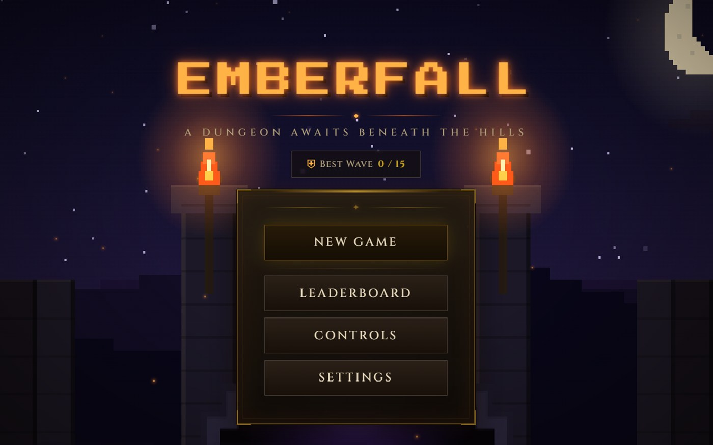
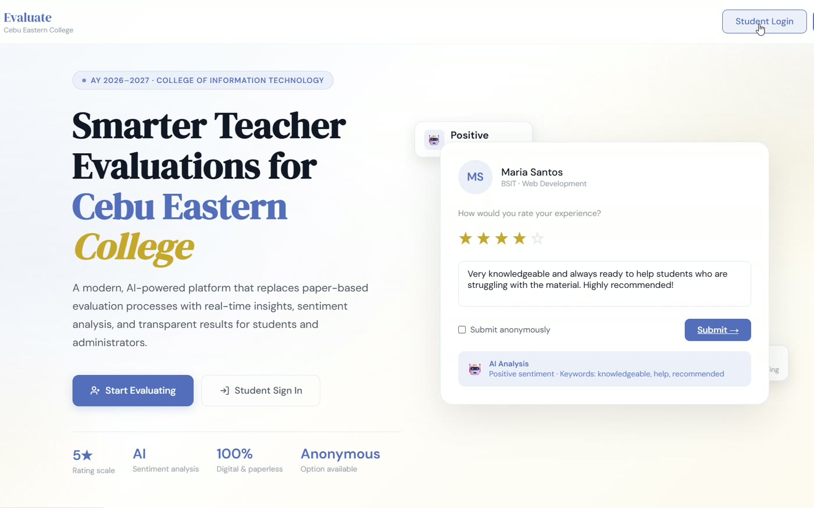
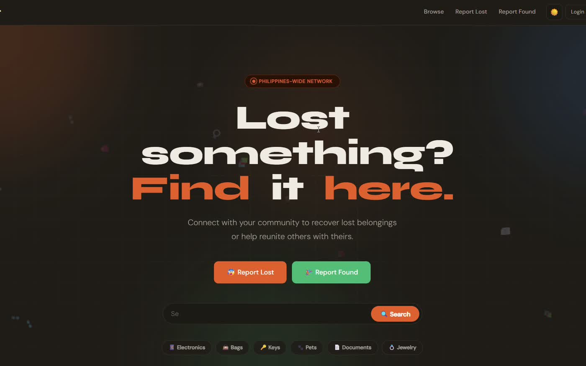

Project Management
Scoping, task breakdown, timelines and keeping a team of peers aligned from kickoff to handover.
I keep projects moving and interfaces honest — planning the work as a project manager, shaping it as a UI/UX designer, and breaking it on purpose as a tester before anyone else can.
Open for Opportunities
Open to internships and junior developer roles — Cebu or remote.
Get in touchA project only ships when someone holds the thread — the schedule, the screens, and the bugs nobody wants to look at.
I'm Ralph, a student developer based in Cebu who tends to end up where the coordination happens. On Emberfall I ran the project: scoping the game, splitting the build across the team, and keeping the deadline honest through to a playable release.
On Evaluate CEC I worked as one of the UI/UX designers, turning a dense evaluation workflow into screens students can finish without a manual. On FindIt I tested — writing cases, hunting edge cases in the report and claim flow, and reporting what broke before release.
Three different seats, one habit: understand the whole thing, then make the next step obvious for everyone else.
Scoping, task breakdown, timelines and keeping a team of peers aligned from kickoff to handover.
Wireframes, user flows and interface systems that stay consistent across every screen in the build.
Structured test cases, exploratory passes and clear, reproducible bug reports developers can act on.
Comfortable in the stack the team actually uses — and able to read the code well enough to test it.
Three team projects, three seats at the table.
01 Project Manager
A dungeon awaits beneath the hills. A turn-based RPG that runs in any browser.
A complete turn-based role-playing game built as a single HTML file — pick a class, then fight down through fifteen waves of procedurally assembled enemies. Combat runs on a four-action loop of attack, skill, defend and item, backed by levelling, status effects, a combat log and a leaderboard.
I ran the project: setting the scope, dividing the build across the team, tracking progress against the deadline, and deciding what made the cut. A lot of that was holding the line on it working properly on a phone — touch layout, landscape and fullscreen — and not just on a laptop.
Play Emberfall 2026

02 UI / UX Designer
Teacher evaluations for Cebu Eastern College, with sentiment analysis on every comment.
A web platform replacing the paper teacher-evaluation process at Cebu Eastern College. Students register with their program, year level and section, see only the teachers assigned to them, rate each out of five stars and leave an optional comment — anonymously if they prefer. Administrators get a live dashboard of top-rated teachers, program averages and sentiment breakdowns.
I was one of the UI/UX designers. The hard part was the shape of the form: an evaluation is long by nature, so the work went into pacing it, keeping labels plain, and making the path from start to submitted obvious on a phone as well as a desktop.
Visit Evaluate CEC 2026

03 Tester / QA
A lost and found network for the Philippines. Report an item, search, get reunited.
A community lost-and-found platform covering Cebu, Manila, Davao and twenty more cities. Items are filed across thirteen categories and searched by category, location or keyword; when a match looks right the claimant submits proof, the owner verifies it, and the two arrange a meetup through the site instead of trading phone numbers in public.
I handled testing. The claim flow is where it counts — proof, verification, and every way a wrong claim could slip through — so I worked through those paths deliberately, documented what broke and under what conditions, and re-checked fixes before they were called done.
Visit FindIt 2026

Led the team through a full browser-game build, from concept and scope to a playable release running on desktop and mobile.
Designed the evaluation screens and user flows for Cebu Eastern College's teacher-evaluation platform, alongside the rest of the design team.
Owned quality assurance for the lost-and-found platform: wrote and ran test cases, reported defects, and verified fixes ahead of release.
Coursework across software development, systems analysis and design, and collaborative project work.
Read it here, or take a copy with you.
Can't see the document? Open the PDF directly.
Got a project that needs someone to hold the thread?